I decided to add a body kit and a few exterior modifications just to give my car a more aggressive look. The install was solid, and everything lines up perfectly. It looks factory, not thrown together.
Ashley M.Body Kit · Exterior Mods
Home›Services Areas›Mandeville
★★★★★ Rated by hundreds of happy customers
Big Easy Custom Cars works with Mandeville drivers to plan custom projects that balance bold design with real performance.
Overview
Vehicle owners in Mandeville who want more than factory builds often choose custom upgrades that reflect how they drive and how their truck or SUV is used.
Custom builds are designed to support comfort, visibility, and long-term durability during everyday driving. Each project is planned as a complete system so the vehicle performs and looks intentional.
Vehicle owners in Mandeville choose Big Easy Custom Cars because customization here is approached as a complete build process, not a collection of add-ons. Every project is planned around how the truck or SUV is actually driven, with attention to comfort, visibility, performance, and long-term durability.
What sets our approach apart:
This approach allows Mandeville vehicle owners to end up with custom trucks and SUVs that reflect their personal style while remaining practical, well-balanced, and ready for everyday driving.
Contact us today to discuss your ideas and start planning a custom build that fits your driving needs.

Where We Work
Big Easy Custom Cars works with vehicle owners in Mandeville and surrounding Louisiana communities. Mandeville customers receive the same level of planning, communication, and build quality throughout every stage of their custom project.
Free consultation in every area we serve.
Our Services in Mandeville
Big Easy Custom Cars focuses on trucks and SUVs that are designed to stand out and stay strong. Our services are structured around full customization rather than basic upgrades, allowing each project to reflect the owner's vision and real-world driving needs.
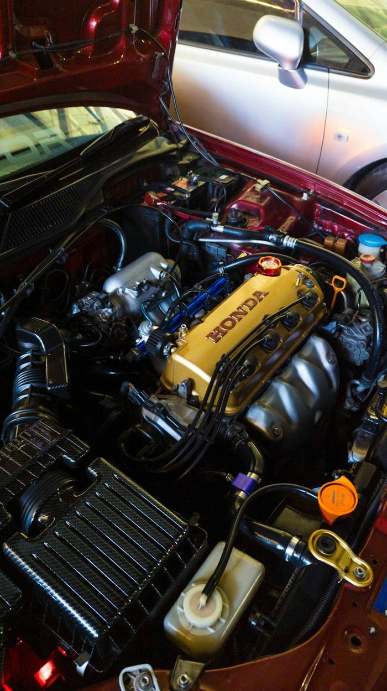
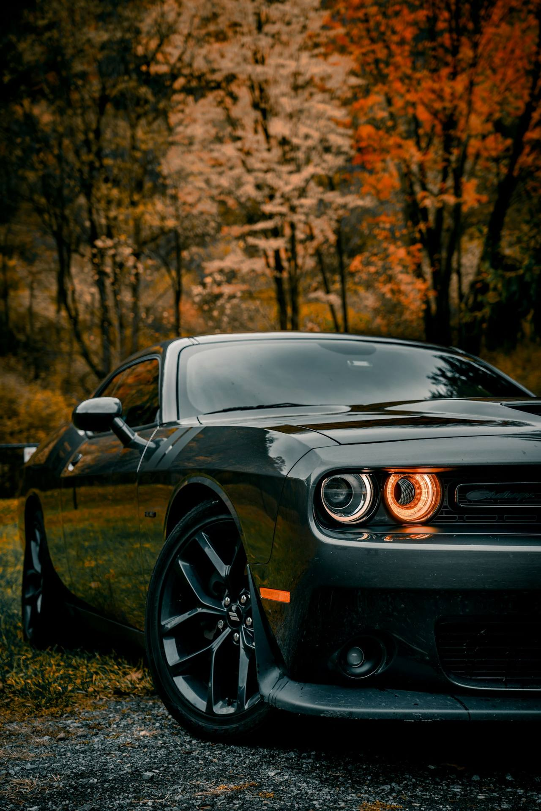
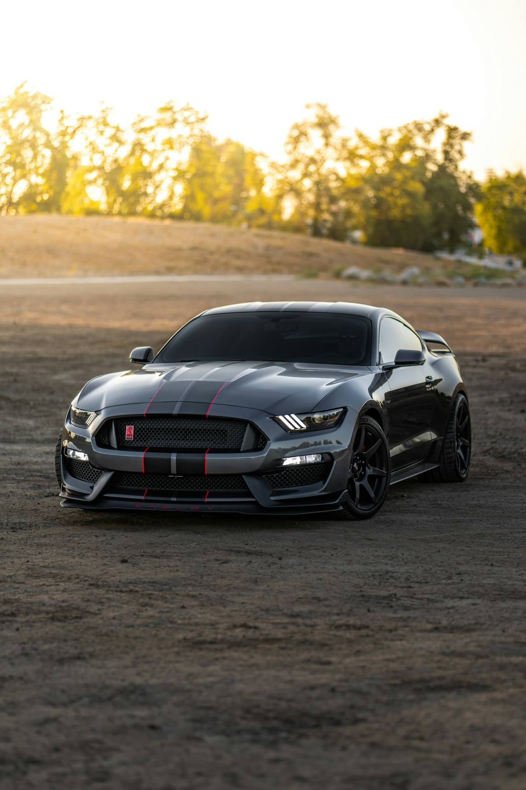
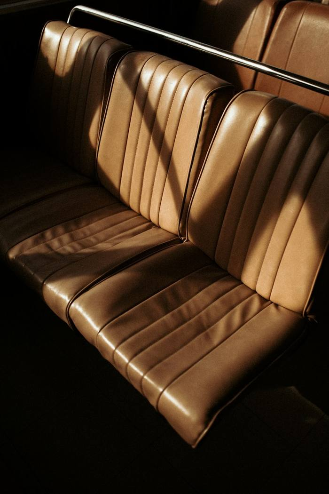
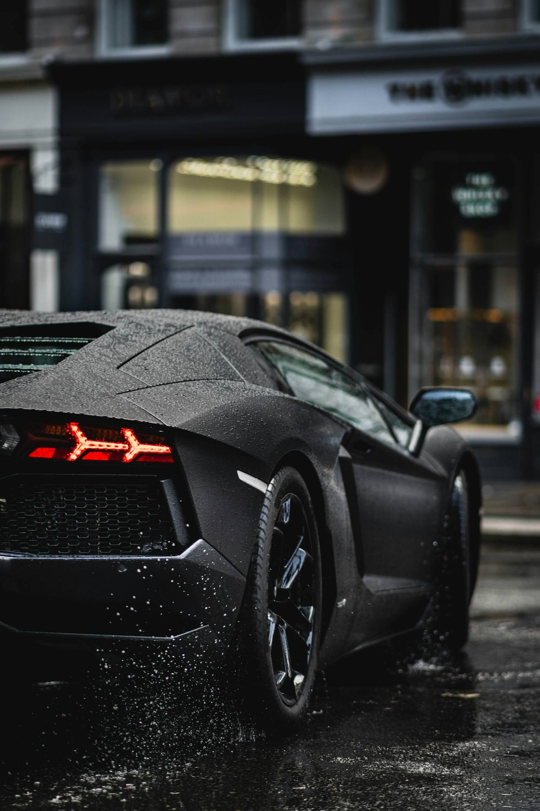
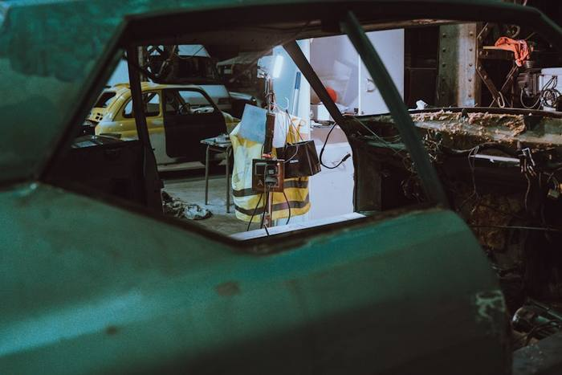
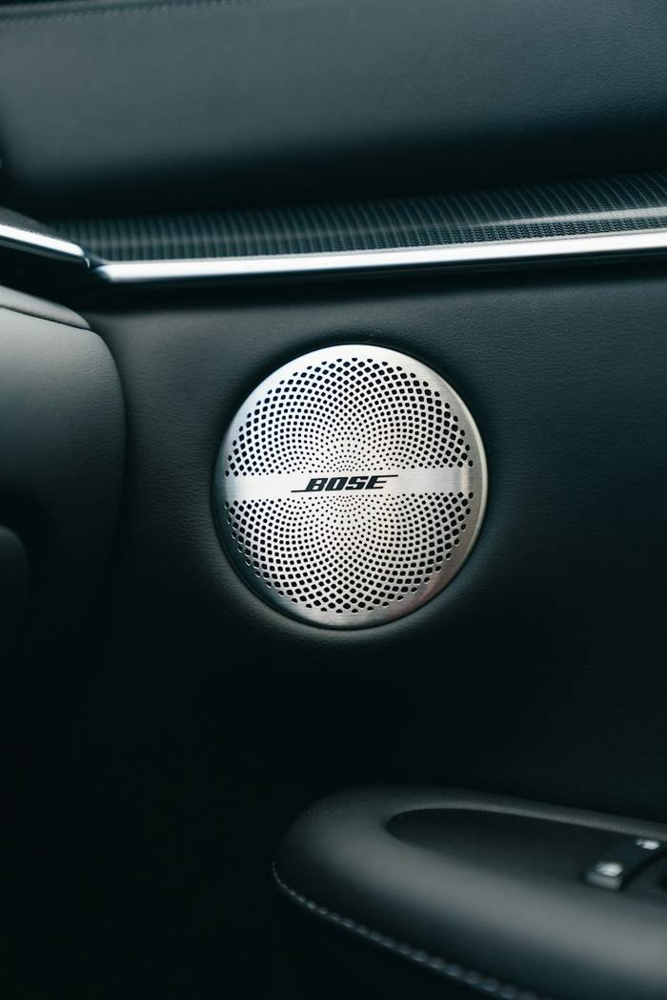
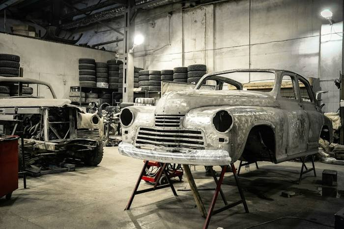
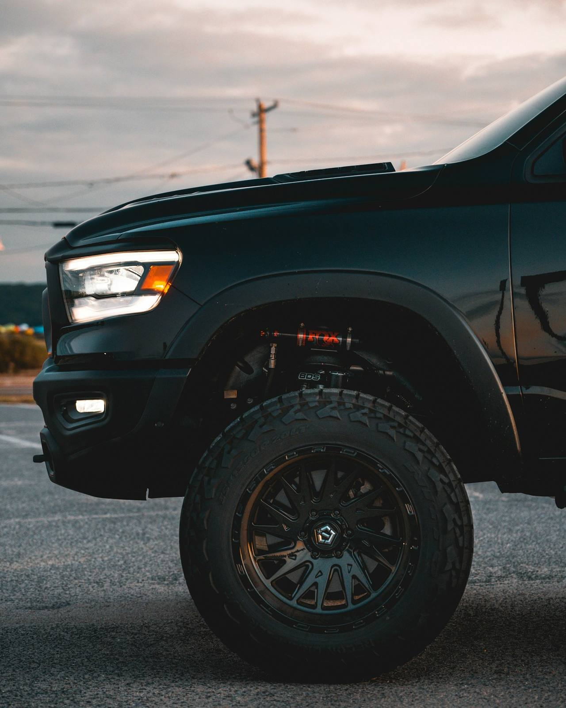
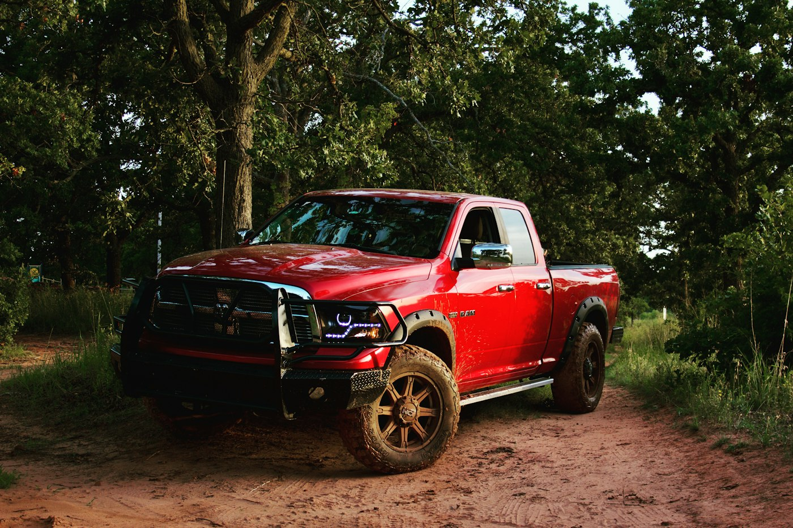
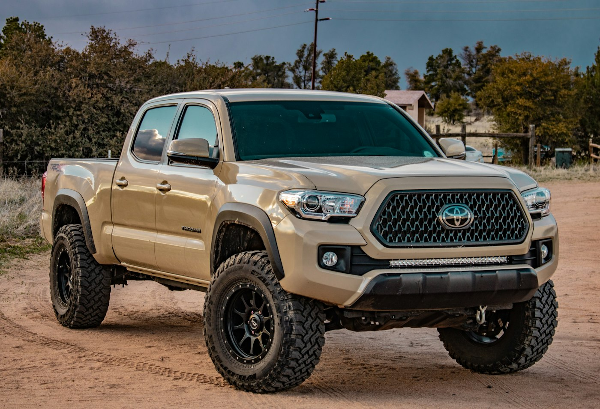
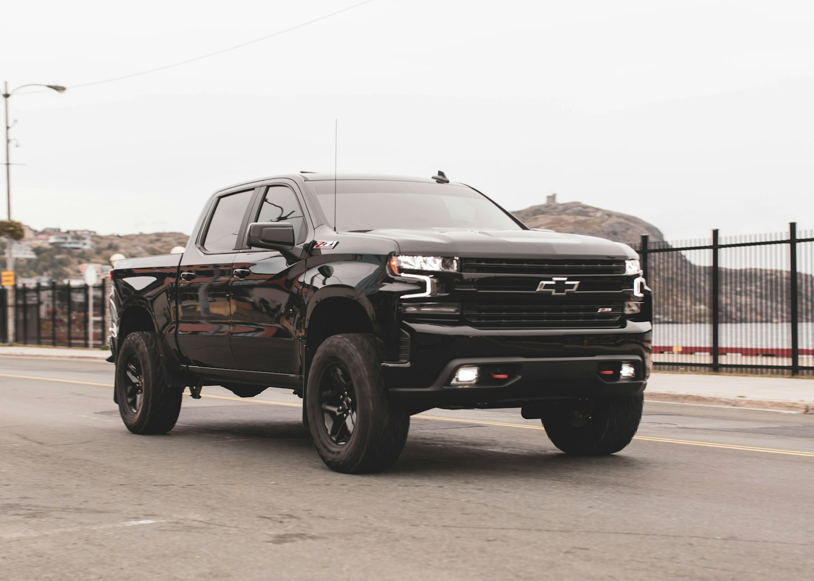
Testimonials
I decided to add a body kit and a few exterior modifications just to give my car a more aggressive look. The install was solid, and everything lines up perfectly. It looks factory, not thrown together.
Ashley M.Body Kit · Exterior Mods
I worked with Big Easy Custom Cars on a full interior upholstery upgrade, and they really delivered. The stitching, the material, the fit, everything looks clean and professionally done. It completely changed the feel of the car.
Monique R.Interior · Upholstery
I didn't know exactly what I wanted at first, but after talking with the crew about custom graphics, we came up with something unique that really fits my style. The paint work is smooth and even up close, which impressed me the most.
Denise M.Custom Graphics · Paint
The Area
Mandeville is a Northshore city located in St. Tammany Parish, Louisiana, along the northern edge of Lake Pontchartrain. The area is known for its residential communities, lakefront access, and relaxed pace compared to nearby urban centers. Mandeville combines suburban living with outdoor amenities while remaining connected to the greater Southeast Louisiana region.
The city has grown steadily as a place for families, professionals, and outdoor enthusiasts who value access to green spaces, local businesses, and regional transportation routes.

Free Consultation
If you are considering custom upgrades for your truck or SUV in Mandeville, a consultation with Big Easy Custom Cars is the best place to start. Discuss your ideas, review available options, and plan a build that matches how you drive and what you want your vehicle to become.